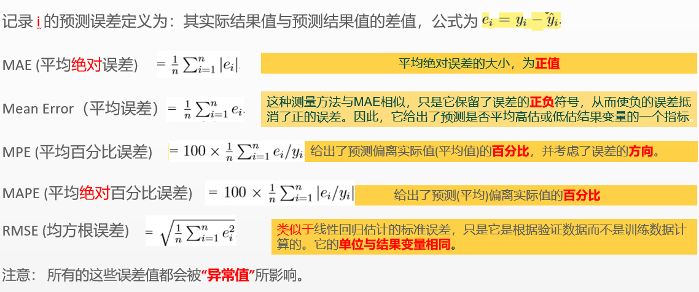

机器学习评估预测性能¶
首先，机器学习预测模型的准确性并不等同于拟合优度。 经典的性能统计度量的目的是找到一个模型，它能很好地适应模型所训练的数据。在这里我们感兴趣的是，应用新记录时的有高准确率的模型。
预测精度测量¶
一些流行的预测精度数值测量
简写
描述
ME Mean Error
Mean Error 平均误差，可能有正负值
MAE
Mean Absolute Error/deviation 平均绝对误差/偏差 与ME相似，但为误差的绝对值，为正值
MPE
Mean Percentage Error 平均百分比误差
MAPE
Mean Absolute Percentage error 平均绝对百分比误差
RMSE
Root Mean Squared error 均方根误差
如下为各个指标的计算公式：
# 根据选择的6特征变量的模型来预测验证，检查模型预测的准确性
car.lm.step.pred <- predict(car.lm.step.both, valid.df1k)
> accuracy(car.lm.step.pred, valid.df1k$Price)
ME RMSE MAE MPE MAPE
Test set 59.26886 1334.978 1024.979 -0.4212544 9.357492